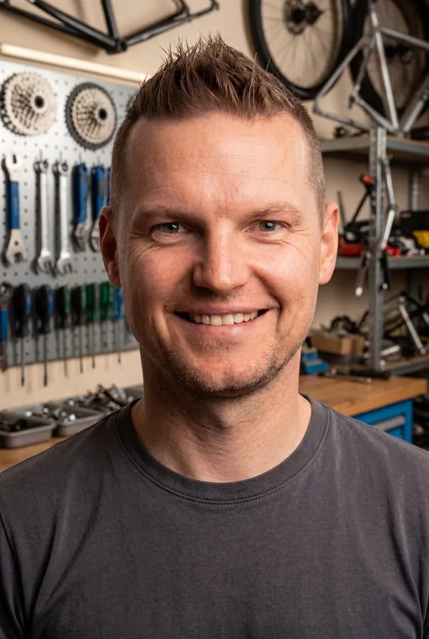

27 Jahre am Fahrrad – vom Mechaniker bis zur eigenen, unabhängigen Beratung. Die Stationen, die mich dahin gebracht haben, wo ich heute stehe.
Es scheint, als würden nun all meine Fähigkeiten und Erfahrungen gebündelt, um mehr Service zu bieten und Prozesse zu gestalten.
Projektmanager, Produktentwicklung, Social Media und Marketing bei Ziegler Schallschutz GmbH. Mal etwas ganz anderes... und genau das was mir bisher gefehlt hat.
Gewinn des ersten Salzburger Fotomarathons (Amateure). Eine tolle Bestätigung für die Qualität meiner "Kunstwerke".
Die große Gelegenheit in die Fahrradindustrie zurückzukehren. Dieses mal als Produktionsleiter bei AIRSTREEEM. Einem Rennrad Produzenten in Bergheim bei Salzburg. Hier optimierte ich Prozesse und hatte den ersten Umgang mit CAD und 3D Druck.
Rückkehr nach Österreich und mein Einstieg als Werkstattleiter beim „Bergspezl Rad“ in Salzburg.
Mein neuer Job bei "TheBicycleChain Ltd." in Bridgwater & Taunton, Somerset. Zuerst als Mechaniker um sprachtlich sattelfest zu werden... und dann auch im Verkauf.
Geschäftsaufgabe, um neue Herausforderungen in Somerset/UK zu suchen.
Durch den Aufbau meiner Onlineshops, begann ich mich mit dem Thema "Fotografie" zu befassen. Aus dieser Notwendigkeit wurde eine neue Leidenschaft und ein Hobby, dass mich bis heute fest im Griff hat.
2010 Gründete ich meinen eigenen Bikeshop namens "FEINSCHLIFF BIKES". Angetrieben von Perfektion, Leidenschaft und der Überzeugung meinen Kunden mehr als Durchschnitt bieten zu können.
Wechsel in den Reklamationsservice & Kundendienst bei KTM Fahrrad in Mattighofen. Hier hatte ich Einblick in die Prozesse der Industrie.
Umzug von Berlin nach Salzburg und mein Neustart als Werkstattleiter bei IKO Bike & Mountain World (Corratec-Standort), Hallwang.
Wechsel zu Velo Sport Werner Otto in Berlin Pankow. Mein erster Kontakt zum Straßen- und Bahnradsport. Hier lernte ich Rennradtechnik von der Pike auf. Und ganz nebenbei machte ich eine zweite Ausbildung zum Einzelhandelskaufmann in der Fachrichtung "Radsport".
Beginn meiner Ausbildung zum Zweiradmechaniker und damit mein erster Job in einem Fahrradgeschäft am Rand von Berlin.

Ich habe mit achtzehn zum ersten Mal an einem Fahrrad geschraubt, das nicht mein eigenes war, und seitdem hat mich das Thema nicht mehr losgelassen. Ich war Mechaniker in Berlin, habe in Salzburg eine Werkstatt geleitet, habe meinen eigenen Bikeshop namens „Feinschliff Bikes“ aufgebaut und ihn wieder aufgegeben, um in England noch einmal ganz von vorne zu schrauben. Jede Station hat mir etwas anderes über Fahrräder, über das Business und auch über mich beigebracht. Technisch, wirtschaftlich und menschlich.
Zwischendurch bin ich in andere Branchen abgebogen, in die Produktion, ins Projektmanagement, und habe dort gelernt, wie man Prozesse plant und Qualität sichert. Das hat mich nicht vom Fahrrad weggebracht, sondern mir eine andere Sicht darauf gegeben. Ich verstehe heute nicht nur, wie ein Rad funktioniert, sondern auch, wie eine Werkstatt, ein Shop oder ein Betrieb dahinter funktionieren muss.
Was daraus geworden ist, siehst du hier auf der Seite. RadlHias.TV ist für mich der Punkt, an dem alle diese Stationen zusammenlaufen. Ich berate mit den Inhalten meiner Homepage unabhängig und kostenlos. Und alles, was ich heute anbiete, basiert auf Vertrauen, dem Vertrauen zu meinem Produkt und mir. Diesen „Luxus“ weiß ich sehr zu schätzen und ich freue mich, so zu 100% meinen Werten und Überzeugungen folgen zu können.